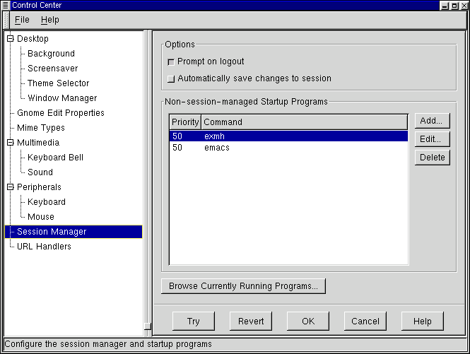

Этот капплет позволяет вам настроить диспетчер сеансов GNOME, который отвечает за запуск приложений в начале сеанса работы GNOME, за сохранение настройки и за завершение сеанса работы GNOME. Подробное описание диспетчера сеансов дается в Гл. 10.
Запрашивать подтверждение - в этом режиме GNOME будет запрашивать подтверждение перед завершением работы.
Автоматически сохранять состояние сеанса - если выбрать этот режим, то GNOME будет автоматически запоминать состояние вашего сеанса работы в момент выхода и восстанавливать его в начале следующего сеанса. В частности, будут восстановлены все GNOME-совместимые приложения. К сожалению, несовместимые с GNOME приложения не могут быть восстановлены таким образом.
Non-session-managed Startup Programs - в этом разделе вы можете задать несовместимые с GNOME приложения, которые следует запускать каждый раз в начале сеанса работы.
Замечание: Нет смысла вносить в этот список GNOME-совместимые приложения: проще оставить их работающими в конце сеанса работы и запомнить этот сеанс.
Чтобы добавить программу к Startup списку, напечатайте соответствующую команду в графе под кнопками Добавить и Удалить и нажмите кнопку Добавить. Это запустит простой диалог, в котором вы можете указать команду запуска приложения и его приоритет.
По умолчанию, все приложения получают приоритет 50. Если вы хотите, чтобы какое-либо приложение (например, диспетчер окон) запускалось раньше, чем остальные, то вы можете уменьшить приоритет.
ВАЖНАЯ ИНФОРМАЦИЯ: Эта возможность предназначена только для опытных пользователей. Если вы незнакомы с системой приоритетов в UNIX, используйте приоритет 50 для всех ваших приложений.
Browse Currently Running Programs - эта кнопка показывает список всех работающих в настоящий момент приложений. Вы можете остановить некоторые из них; тем самым, они не будут они не будут сохранены при окончании этого сеанса работы и не будут восстановлены в следующем сеансе. Следует иметь в виду, что большинство этих приложений - это системные команды, которые не следует останавливать. Эту кнопку имеет смысл использовать, например, если вы не хотите пользоваться одним из компонентов GNOME (скажем, панелью).
ВАЖНАЯ ИНФОРМАЦИЯ: Эта возможность предназначена только для опытных пользователей. Ею не следует пользоваться для остановки приложений, которые вы хотите использовать в следующем сеансе работы GNOME.
Рисунок 9-13. Капплет диспетчера сеансов

| Пред. | Начало | След. |
| Внешние устройства | Уровень выше | Настройка графического интерфейса |